Navi Customizer
Once you've clicked into it from the Navi screen, you'll see your Navi Customizer.
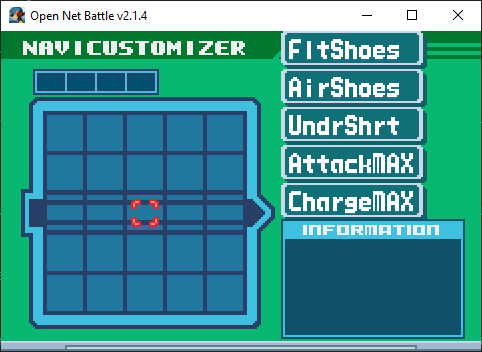
It's empty right now. Your installed Block mods will appear listed on the right. I've got a few for examples.
Controls
Use UI Up/Down/Left/Right to move your cursor. If you move all the way to the right, off the Memory Map, or if you press Cancel...
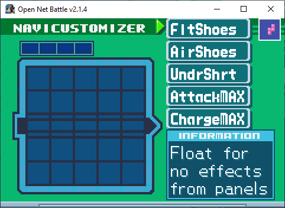
You'll be on the Block list. You can move up and down here with UI Left/Right,
go back to the Memory Map with UI Right, or select a Block to place by using
Confirm. You'll find the RUN button at the bottom, which we'll get back to
later.
Placing a Block
Once you've pressed Confirm on a Block in the list, you'll start placing it on the Memory Map.
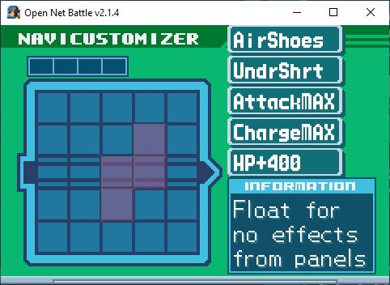
You can press Cancel to cancel. You can also move the part around with the UI Up/Down/Left/Right...
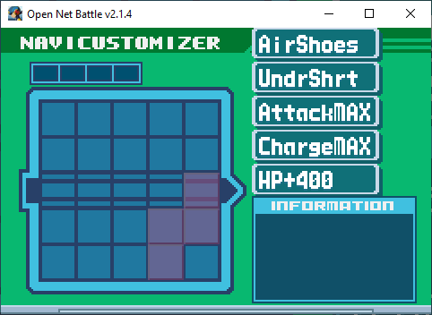
...rotate it with shoulder left or right...
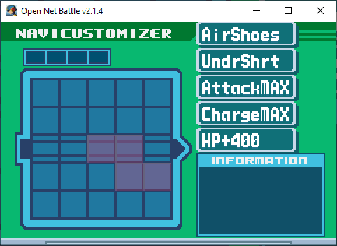
...and place it with Confirm.
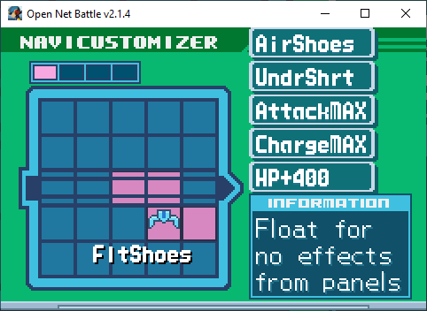
Moving a Block
With your cursor on the Memory Map, you can press Confirm on a placed Block to get two new options:
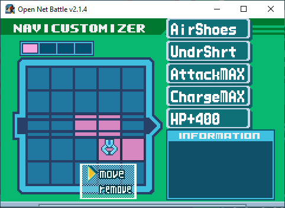
If you press Confirm on the Move option, you'll pick it back up again. Press
Cancel to return it to is original state that you placed it in, or anything else
you saw in the previous section.
If you press UI Down and then Confirm on the remove option, it'll be removed
from the Memory Map and placed at the bottom of the Block list.
Out of Bounds
Because this is based on BN6's NaviCust, you're allowed to place Blocks out of bounds. It can't have any part of it off the corners, and at least one part of it must be in bounds.
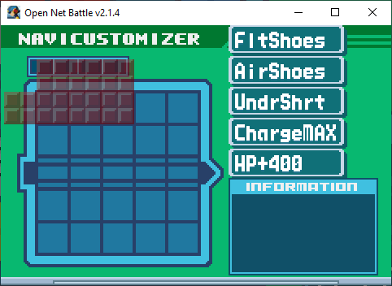
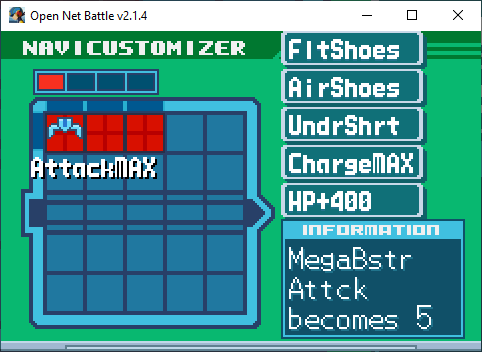
You'll see the edges darken where part of the Block is out of bounds (except on the Command Line, as a visual glitch in v2.1).
These out of bounds slots extend past the edges of the Command Line, too, and count as a Command Line slot for Program parts.
Running
Once you're done making any changes, you can select the RUN button to save
them. You can find this button at the bottom of the Block list.
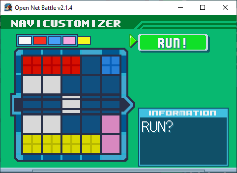
Press Confirm to Run it.
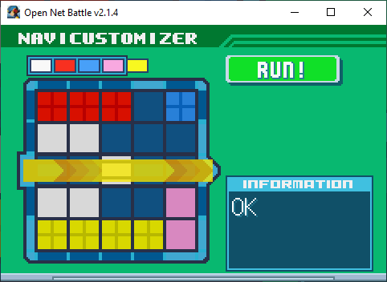
Your changes are saved to disk now. You'll then be prompted to leave or stay on this screen. Select whichever you prefer with the UI Left/Right buttons and Confirm (or Cancel to automatically choose NO, staying on the screen).
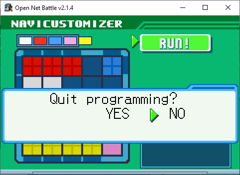
Leaving
You can leave at any time by pressing Cancel while viewing the Block list.
If you do leave without running, your changes will not be saved.
Program Parts
As you might remember from BN, NaviCust Blocks come in two flavors:
- Program Parts, which appear solid
- Plus Parts, which appear to have a + in them
Program Parts must have at least one part of them on the Command Line, or else they won't run. They'll still work if that one part is out of bounds in the same row as the Command Line.
Command Line
The Command Line is that strip of slots in the center of the NaviCust, with those extra black lines through them. There are 5 slots in bounds, and 1 more on either side out of bounds, for a total of 7. The out of bounds slots still count as a Command Line slot for making Program Parts work.
Bugs
Normally, you would incur bugs for doing at least of the following:
- Having any part of any Block out of bounds
- Having any part of a Plus Block touching the Command Line
- Having no part of a Program Part on the Command Line
- Having more than 4 colors total represented in the NaviCust
- Having two parts of the same color touching
The only "rule" ONB follows right now is that you must have at least one part of a Program Part on the Command Line, which prevents the Block from working. Otherwise, there are no bugs.
Some players like to play with a dummy Block, shaped like BugStop, to limit their NaviCust in a realistic way, and to be prepared for when bugs are introduced. You may want to talk with your opponents in PvP to see what they prefer.
When ONB does make bugs available, keep in mind that it may be up to modders to program the bug behavior for their Block mod, so there may still be no bugs until they have done that.
Copy/Paste
While not available in v2.1.4, the next version, v2.1.5, introduces copy/paste for NaviCust, just like the folder can do.
Press Ctrl + C to copy the NaviCust to your clipboard. Here's how mine looks with AirShoes and SuperArmor:
```
# Cust by Alrysc
com.alrysc.block.airshoes,ca5f131c4d94e4f9709d2fee644263ba,16,0
com.OFC.block.EXE6-001-SuperArmor,9bd63b9d2d1cb1ecab85887455bd9a97,19,3
```
Each line after that shows a Block's package ID, MD5 hash (essentially, their version), and then two numbers representing its location on the Memory Map, and its rotation.
You can then paste onto an empty NaviCust using Ctrl + V. You cannot paste if there are Blocks already placed.
You should hear one of two sounds:
- The boost consumption sound, good: Everything pasted perfectly.
- An error sound, bad: Something went wrong.
If you hear the error sound, check the console window (the black window that opened with the game) to see what went wrong. Sometimes, it's nothing to worry about. Here are the list of possible error causes:
- At least one of the Blocks you tried to paste isn't installed
- At least one of the Blocks you tried to paste is installed, but the paste wanted a different version than you had
- At least one of the Blocks you tried to paste couldn't be added for another reason, like if it didn't fit in the spot it tried to be put into
Some errors will still let the Block be added, but others won't.
Where's My HP?
You may have added Blocks that should raise your health, but didn't see any change. This could be for one of two reasons:
- You're looking at the overworld HP
- You just started battle and don't see the HP added
ONB v2.1 doesn't show HP changes on the overworld. You will likely see your new HP in battle.
If you start a battle and don't see the HP change, this is because you're using the HP+ Block mods that add your HP after you leave the Custom Screen, instead of at the start of battle. These are blocks that were made to combat a bug that existed in v2.0, where HP+ Blocks would raise your max health but not your starting health.
As of v2.1, this is fixed, so you can use another HP+ Block mod and it should work as expected.
Greyed Parts
If you're on a server with a whitelist, and your NaviCust contains any Blocks that are not allowed, those Blocks will appear greyed out on the Memory Map. These Blocks will be loaded, and will not affect your Player in battle.
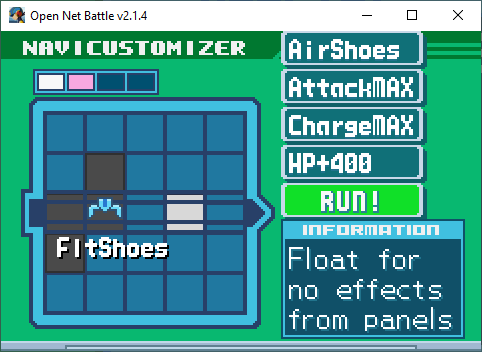
You can read more about this on the page about whitelists